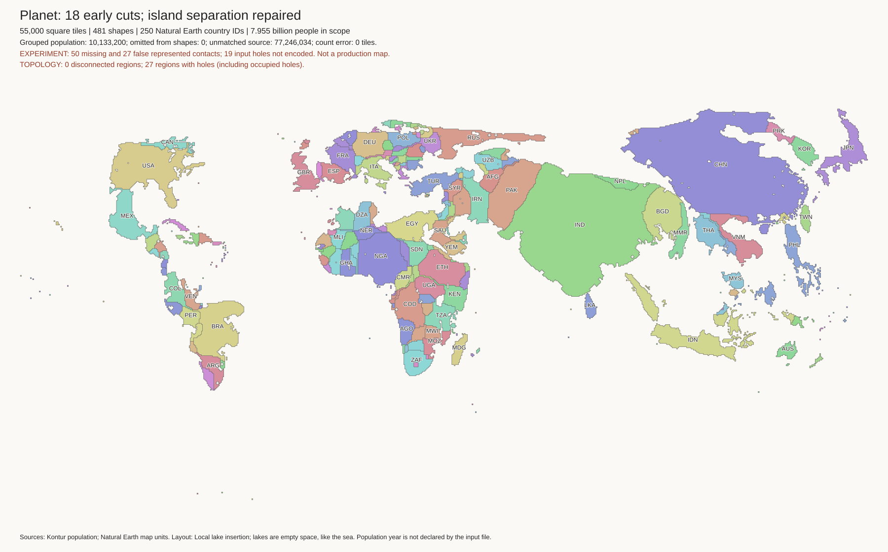
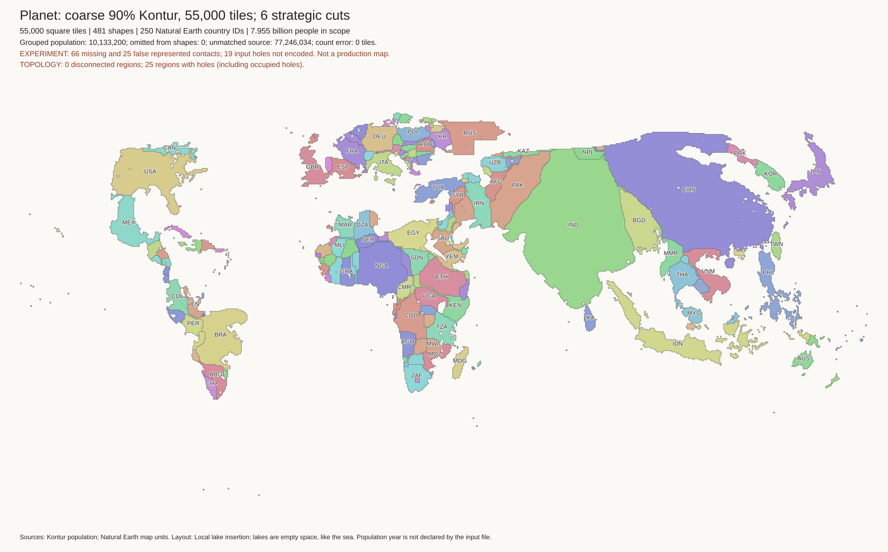
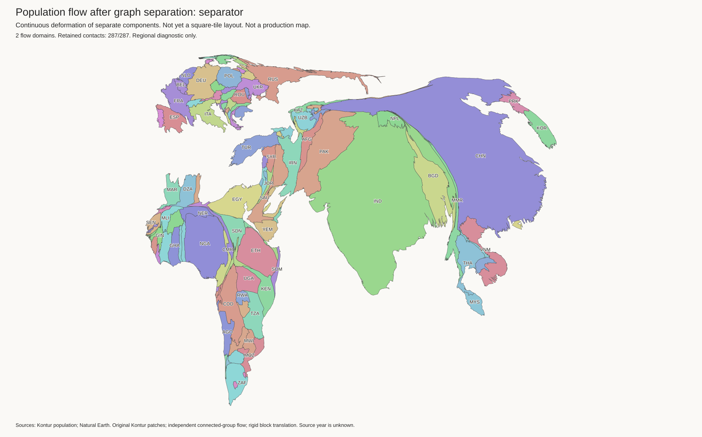
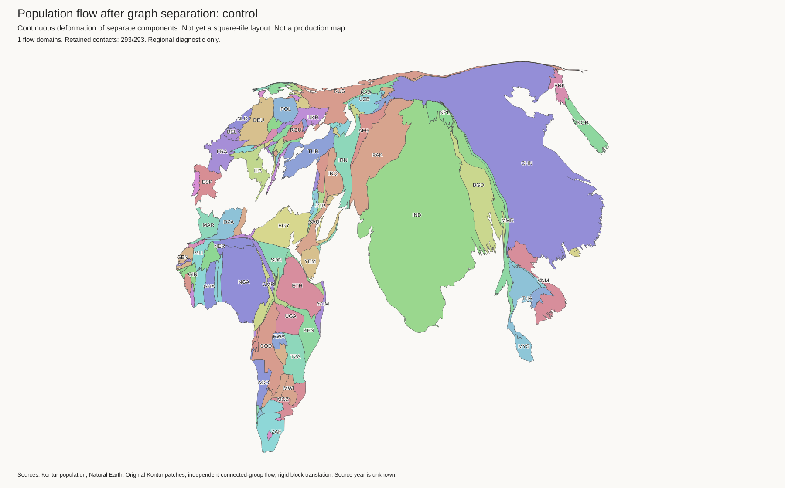
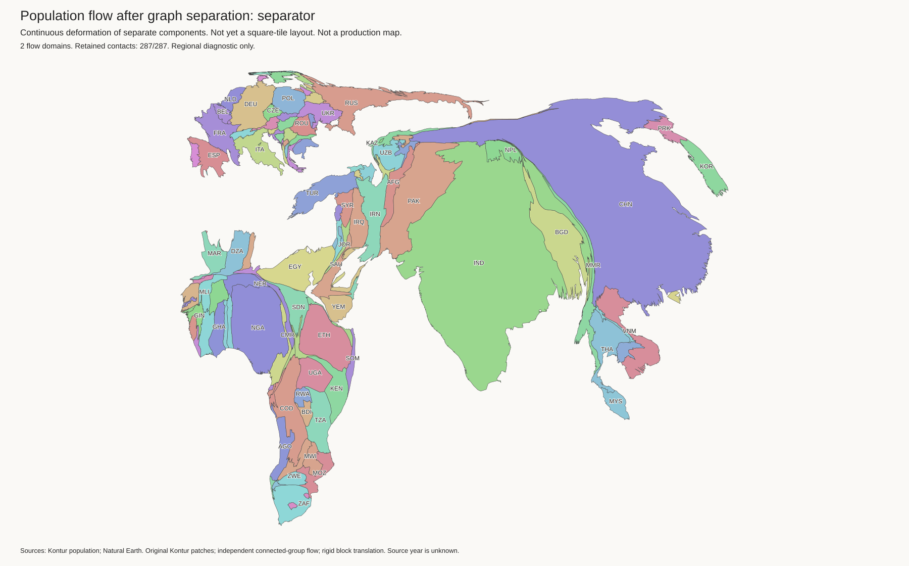
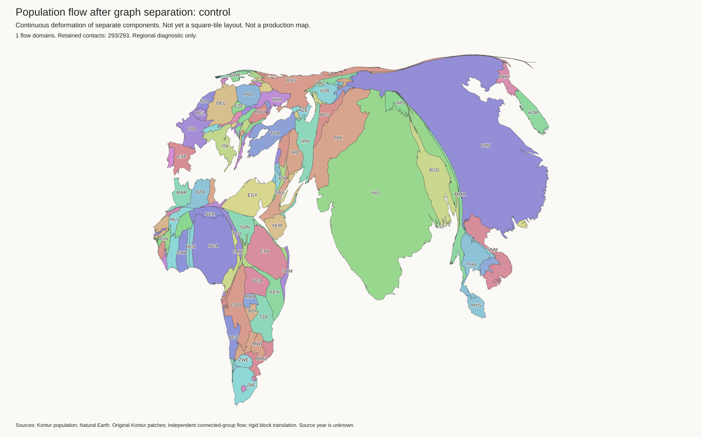
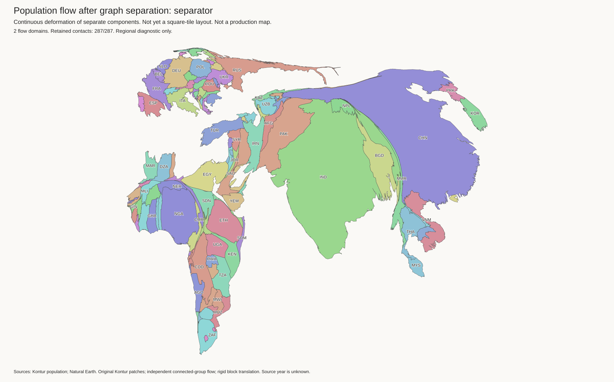
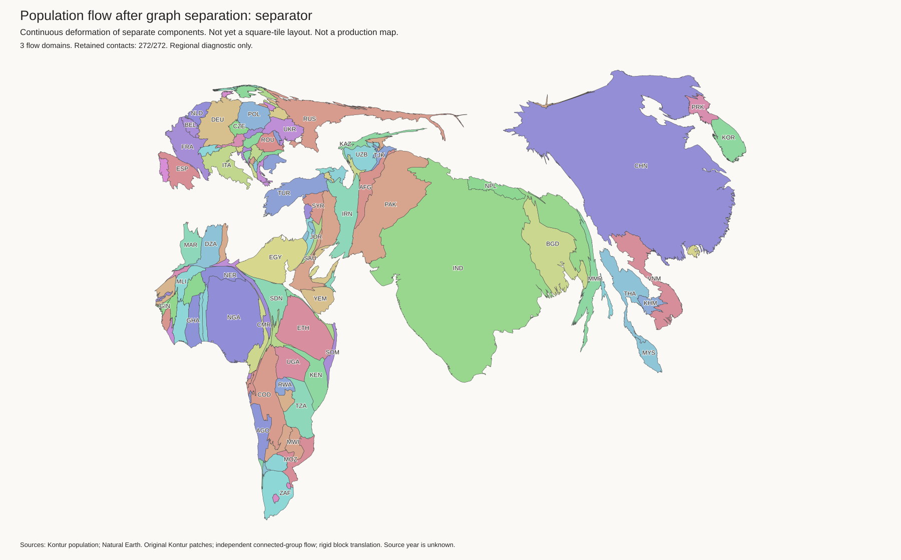
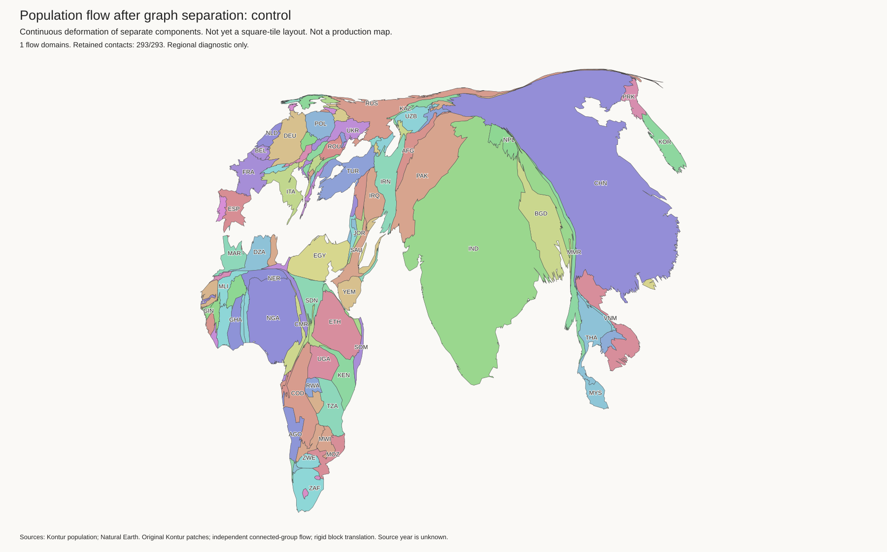
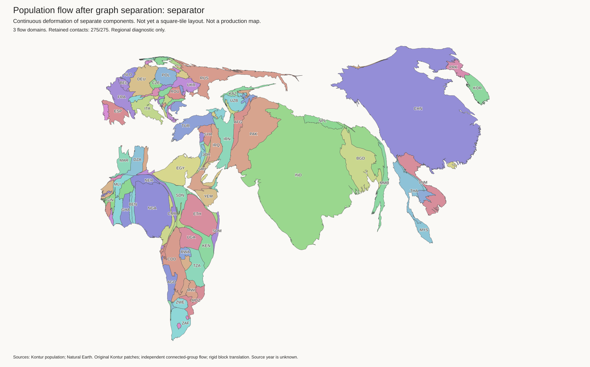

Current best: unchanged · All measurements · Why wider strips were not enough
Start with the first 55k preview below: the 18-cut candidate. It gives a useful shape release for China and India, and improves Russia's tile outline score. Kazakhstan is still slightly worse than the current best. Britain and the Nordic countries still need work. This is not an approved replacement.
Research candidates, not replacements. Separate flow domains let large land groups change shape independently. The earlier four cuts left routes through the Caucasus and North Korea. They did not split the retained border graph. A shared flow still coupled the regions. A wider empty strip did not remove that coupling.
The new tests cut the graph before any population fit. They fit whole connected groups, not separate countries. Every uncut border remains inside a shared flow domain. The six-cut test retains all 287 other regional contacts. The three-domain tests also separate China from India. They retain the contacts counted in their panels.
The cut policy changes. The original limits were mean density 20 and segment p90 50 people/km². The first relaxed tests use 75 and 150. A further test permits p90 200. A short-border alternative permits at most 50 km and at most 500,000 people in the audited corridor. Russia–North Korea uses that alternative. A star below marks a border that fails the original rule. No relaxed policy is approved for production. The graph cost sums corridor populations, which can count a person more than once.
All flow runs reuse the original Kontur patches and population targets. They remove no source land or people. The regional fit contains 143 components and 6,170,824,688 people. Rigid translations place the large groups after fitting. The 55k previews then use the existing island and empty-lake stages with a separate cut-aware contact file.
OWID reference excerpt: Russia is far from China, but China and India still touch. The new three-domain method needs more cuts than that reference. The excerpt omits other countries; not every blank area in it is sea. Population scope and country shapes also differ.
All completed previews retain exactly 55,000 country tiles. Lakes are empty cells and do not use country tiles. Compare these tile results, not only the smoother guides. The six-cut preview improves China but worsens Kazakhstan; Russia's tile outline score does not improve in that six-cut test. The 18-cut test improves all three large-country scores. It uses five borders that fail the original density rule. All 18 cuts remain open in its tile preview.
The island-order repair allows the minimum movement needed to satisfy source separation before applying the usual movement limit. This fixes Japan's rejected eastward move in the 21-cut trial without a country-specific rule. The 18-cut layout already placed Japan on the correct side of Korea.
| Map | Russia | China | India | Kazakhstan | Missing retained borders | False borders | Non-lake enclosed cells |
|---|---|---|---|---|---|---|---|
| planet-three-block-p90-200-islands | 0.5154 | 0.3570 | 0.3922 | 0.3669 | 50 | 27 | 587 |
| Current best, same policy | 0.5856 | 0.5168 | 0.4278 | 0.3438 | 65 | 48 | 338 |
| planet-complete-separator | 0.6051 | 0.4011 | 0.4212 | 0.6287 | 66 | 25 | 392 |
| Current best, same policy | 0.5856 | 0.5168 | 0.4278 | 0.3438 | 70 | 48 | 338 |
| planet-three-block-islands | 0.5933 | 0.3563 | 0.3902 | 0.4296 | 53 | 22 | 553 |
| Current best, same policy | 0.5856 | 0.5168 | 0.4278 | 0.3438 | 63 | 48 | 338 |
Outline error: lower is better, with area and centre aligned and no rotation. Non-lake enclosed cells are not all phantom holes; real seas and intended water can be enclosed. The largest new enclosed regions include water beside the Red Sea countries and the Baltic countries; the summary lists their neighbouring countries. Each baseline row uses the same retained-border policy as its candidate.
europe · south-asia · japan-korea · indonesia · africa · Run record

europe · south-asia · japan-korea · indonesia · africa · Run record

europe · south-asia · japan-korea · indonesia · africa · Run record
These maps are guides, not tile layouts. All within-domain contacts remain, but solver area floors still affect tiny components. Grid 256, 512, and 1024 tests change numerical resolution, not the population source. The tile pipeline can change the shape ranking.
| Flow | Russia | China | India | Kazakhstan |
|---|---|---|---|---|
| complete-separator-flow/control | 0.7132 | 0.6053 | 0.4368 | 0.7242 |
| complete-separator-flow/separator | 0.5839 | 0.5249 | 0.4097 | 0.7707 |
| complete-separator-flow-256/control | 0.7426 | 0.6358 | 0.4589 | 0.6841 |
| complete-separator-flow-256/separator | 0.5566 | 0.5457 | 0.4124 | 0.7398 |
| complete-separator-flow-1024/control | 0.6969 | 0.5904 | 0.4546 | 0.6897 |
| complete-separator-flow-1024/separator | 0.6010 | 0.5170 | 0.4137 | 0.7829 |
| three-block-separator-flow-repeat/control | 0.7135 | 0.6053 | 0.4369 | 0.7252 |
| three-block-separator-flow-repeat/separator | 0.5841 | 0.3742 | 0.3559 | 0.7890 |
| three-block-separator-flow-1024/control | 0.6970 | 0.5905 | 0.4546 | 0.6899 |
| three-block-separator-flow-1024/separator | 0.6010 | 0.3724 | 0.3589 | 0.7874 |
| three-block-p90-200/control | 0.7117 | 0.6083 | 0.4386 | 0.7222 |
| three-block-p90-200/separator | 0.5839 | 0.3815 | 0.3595 | 0.7366 |








AZE–RUS *, CHN–RUS, GEO–RUS, KAZ–RUS, MNG–RUS, PRK–RUS *
AZE–RUS *, CHN–RUS, GEO–RUS, KAZ–RUS, MNG–RUS, PRK–RUS *
AZE–RUS *, CHN–RUS, GEO–RUS, KAZ–RUS, MNG–RUS, PRK–RUS *
AZE–RUS *, CHN–RUS, GEO–RUS, KAZ–RUS, MNG–RUS, PRK–RUS *, AFG–CHN, BTN–CHN, CHN–IND, CHN–KAS, CHN–KAZ, CHN–KGZ, CHN–LAO *, CHN–MMR *, CHN–NPL, CHN–PAK, CHN–TJK, KHM–LAO, LAO–THA *, MMR–THA *, LAO–VNM *
AZE–RUS *, CHN–RUS, GEO–RUS, KAZ–RUS, MNG–RUS, PRK–RUS *, AFG–CHN, BTN–CHN, CHN–IND, CHN–KAS, CHN–KAZ, CHN–KGZ, CHN–LAO *, CHN–MMR *, CHN–NPL, CHN–PAK, CHN–TJK, KHM–LAO, LAO–THA *, MMR–THA *, LAO–VNM *
AZE–RUS *, CHN–RUS, GEO–RUS, KAZ–RUS, MNG–RUS, PRK–RUS *, AFG–CHN, BTN–CHN, CHN–IND, CHN–KAS, CHN–KAZ, CHN–KGZ, CHN–MMR *, CHN–NPL, CHN–PAK, CHN–TJK, LAO–MMR *, MMR–THA *